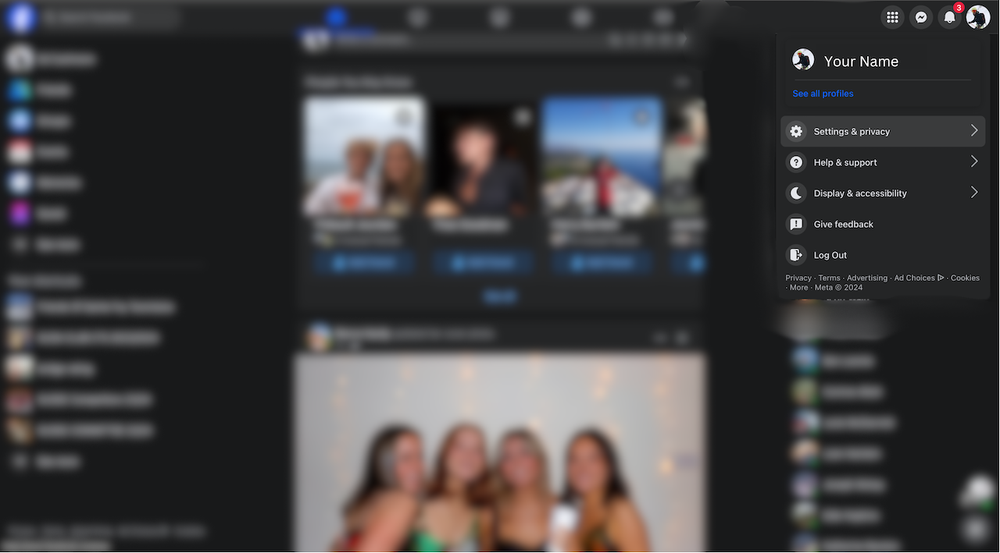
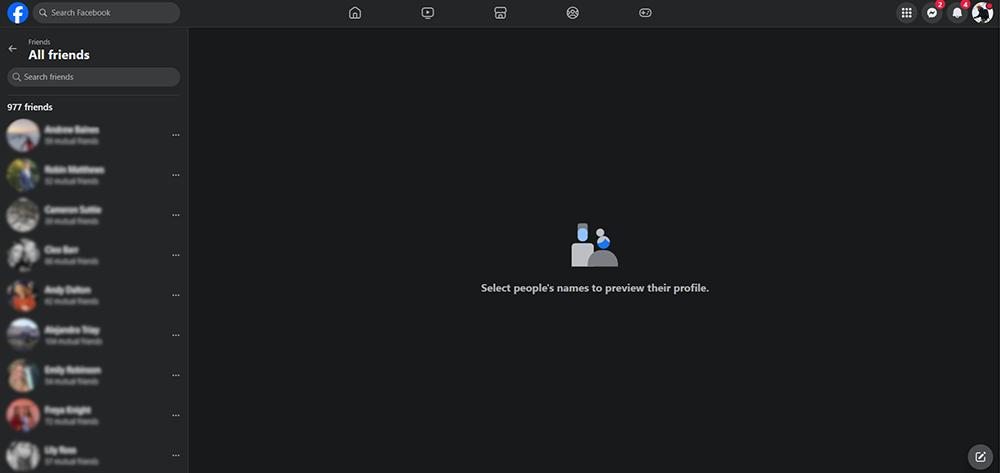
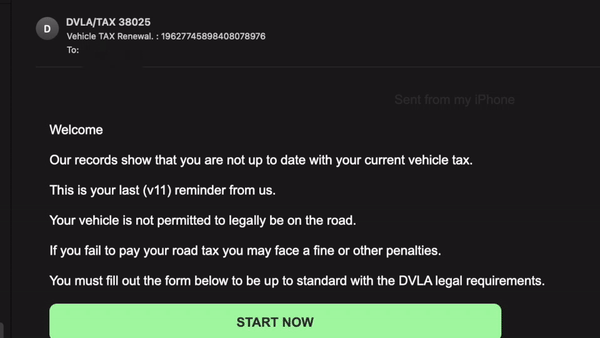
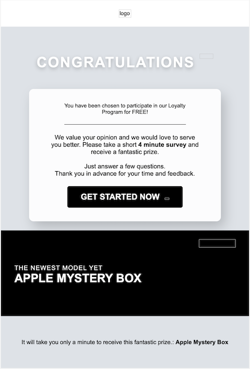
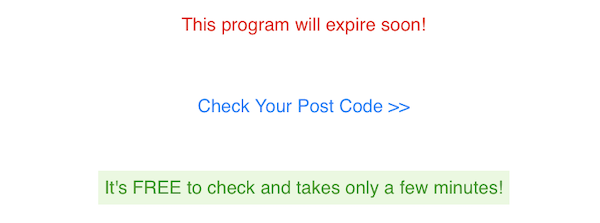

Profile Privacy: Go through your Facebook privacy settings and adjust who can see your posts, send you friend requests, and how people can look you up. Regularly review these settings to ensure they're set according to your preference. Remember the best practice is to be cautious!
Know Your Friends: Periodically review your friends list to ensure you're only connected with people you know and trust. Remember, the more people have access to your information, the greater the risk of data misuse.
Be Mindful: Be cautious about the personal information you share on your profile or posts. Avoid sharing sensitive information that could be used for identity theft, such as your home address, phone number, or date of birth.
Mismatched or Odd Email Addresses: Scammers often use email addresses that resemble legitimate ones but with subtle differences. For example, using "rn" instead of "m" (e.g., "admin@cornpany.com" instead of "admin@company.com").
Public Email Domains: Be wary of emails coming from public email services (e.g., @gmail.com, @yahoo.com) when they claim to be from a legitimate organization, which should have its domain (e.g., @company.com).
Spelling and Grammar Mistakes: Professional organisations proofread their communication. Numerous errors could indicate a scam.
Generic Greetings: Scammers often use generic phrases like "Dear Customer" because they are sending bulk emails and don’t know your name.
Urgent or Threatening Language: Scammers create a sense of urgency to provoke quick action. Look out for threats or warnings of account closure, fines, or legal action.
Phishing emails often contain links to malicious websites or attachments that can infect your device with malware.
Before clicking on any links or downloading attachments, hover your cursor over them to preview the URL or file name. If the link or attachment appears suspicious or unfamiliar, refrain from interacting with it and report the email to your organization's IT department or email provider.
If you receive a suspicious email, report it to your organisation's IT department and email provider. Reporting phishing attempts helps protect others from falling victim to similar scams.
Complexity: Create passwords that are a mix of letters (both uppercase and lowercase), numbers, and symbols. If you are going to write them down make sure you learn how to encrypt files!
Length: Aim for at least 12 characters. Longer passwords are harder to crack.
Unpredictability: Avoid using easily guessable information like your name, birthdate, or common words.
Centralized Security: If writing down passwords is too challenging, using password managers allow you to store all your passwords in one secure place, protected by one master password.
Password Generation: They can generate strong, random passwords for you, eliminating the need to create and remember complex passwords.
Accessibility: Access your passwords across devices securely.
However, they can cost money, some notably password managers include LastPass, Google Passwords and iCloud Keychain
Security Practice: Change your passwords regularly to minimize the risk of being compromised. Aim to update your passwords every three to six months, especially for sensitive accounts like email and banking. Some password managers allow you to see a list of compromised passwords, change these as soon as possible!
Extra Layer of Security: Whenever possible, enable two-factor authentication for your accounts. 2FA adds an additional step to your login process, typically a code sent to your phone or generated by an app, text or email, making it much harder for attackers to gain unauthorised access.